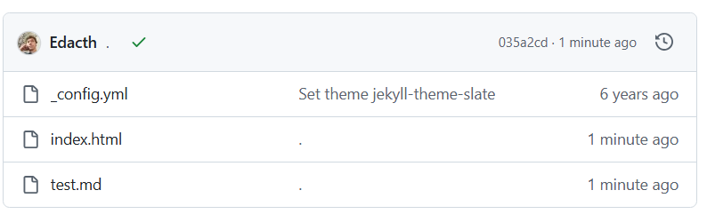

The website is real.
What a feeling.
I created this repository the same month I graduated college. To my surprise, that was apparently *6 years ago*. Wow. Time flies when you're ambivalent toward both good and evil.
I'm about to do some interesting stuff and I need a place to host it, share it, give it voice.
I'm gonna try stuff and see what sticks. This is one of those objects of dubious stickiness. I don't really do web dev so I'm keeping it simple.

I'm learning how to use CSS. Watch THIS